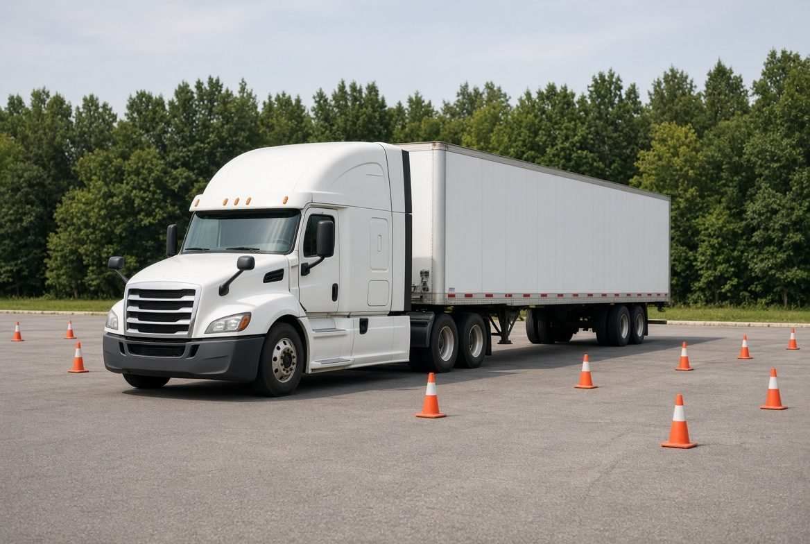

The school trains people to operate a Class A combination vehicle and to handle the English used in the cab and at the scale. Training is the product. There is no placement offer and no income promise.
Chief executive and school administrator.
Chief instructor.
Operations and applied English.